Pansion Makina stoji na samoj obali u središtu Vodica. Sobe s klimom i doručkom, a u prizemlju restoran, pizza iz krušne peći i cocktail bar.
"Ujutro uživajte u doručku na terasi s pogledom na vodičku marinu, poslijepodne lagano odšetajte do obližnje plaže, a navečer se slobodno prepustite noćnom životu Vodica bez razmišljanja o prijevozu doma."
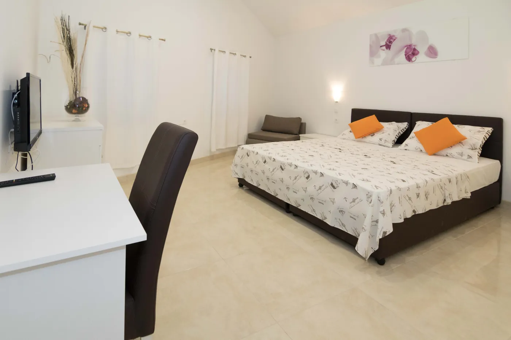
Soba za jednu osobu s vlastitom kupaonicom, radnim stolom i klimom.
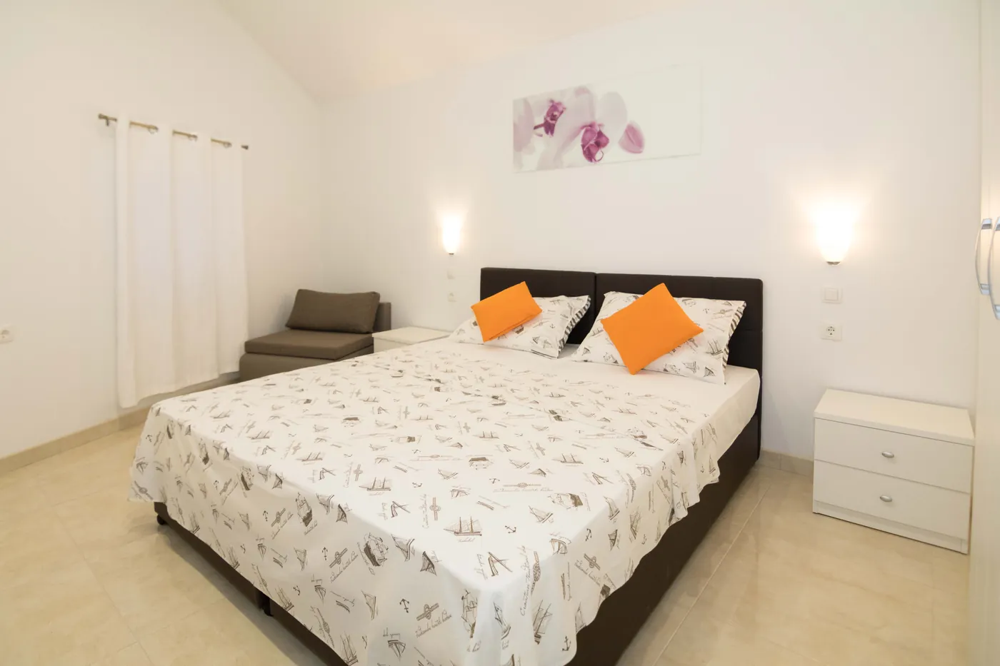
Soba s bračnim ili odvojenim krevetima. Dio soba ima i pomoćni ležaj za treću osobu.
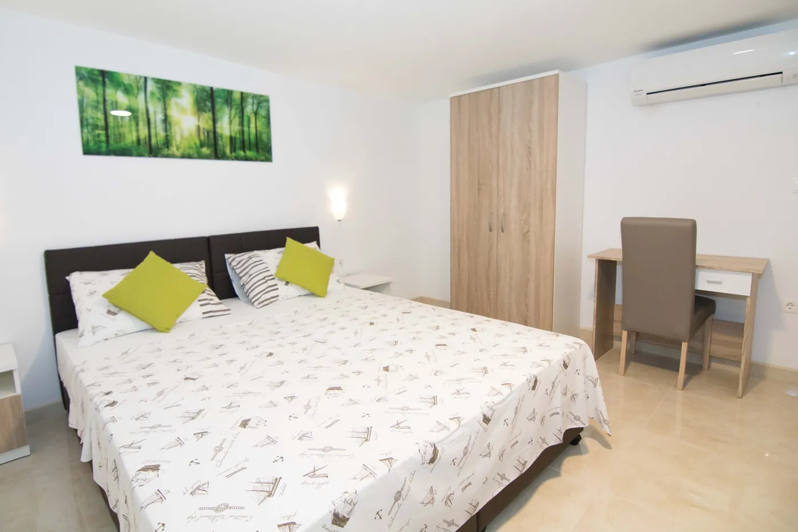
Najprostranija soba u pansionu, pogodna za obitelj ili društvo od četvero.
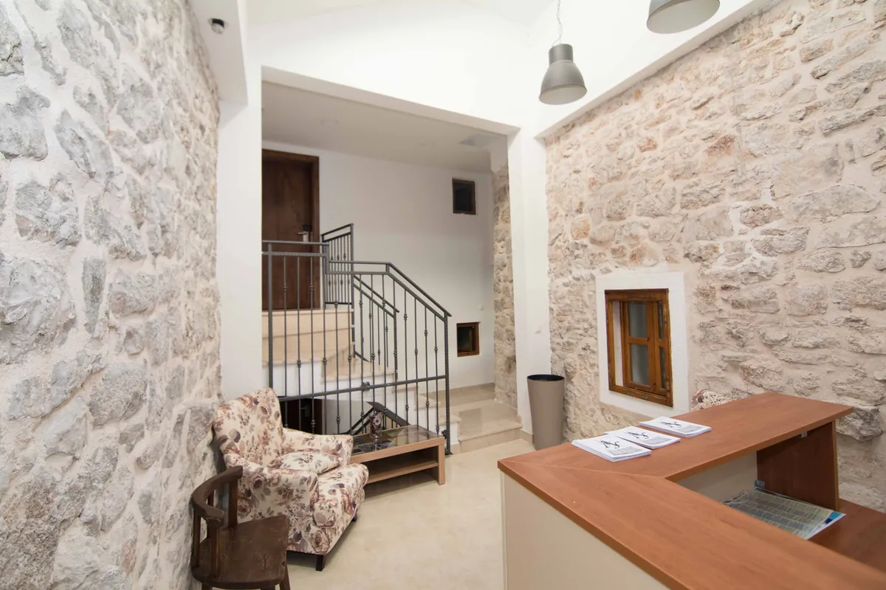
U prizemlju objekta su konoba i restoran s pizzom iz krušne peći, cocktail bar i night bar, a na katovima sobe pansiona. Zbog toga gostima nije potreban prijevoz do izlaska ni natrag.
Pansion radi cijelu godinu, od 1. siječnja do 31. prosinca. Recepcija je dostupna 0 do 24, prijava od 14:00 do 23:00, odjava od 08:00 do 11:00. Osoblje govori hrvatski, engleski, njemački, talijanski i španjolski.
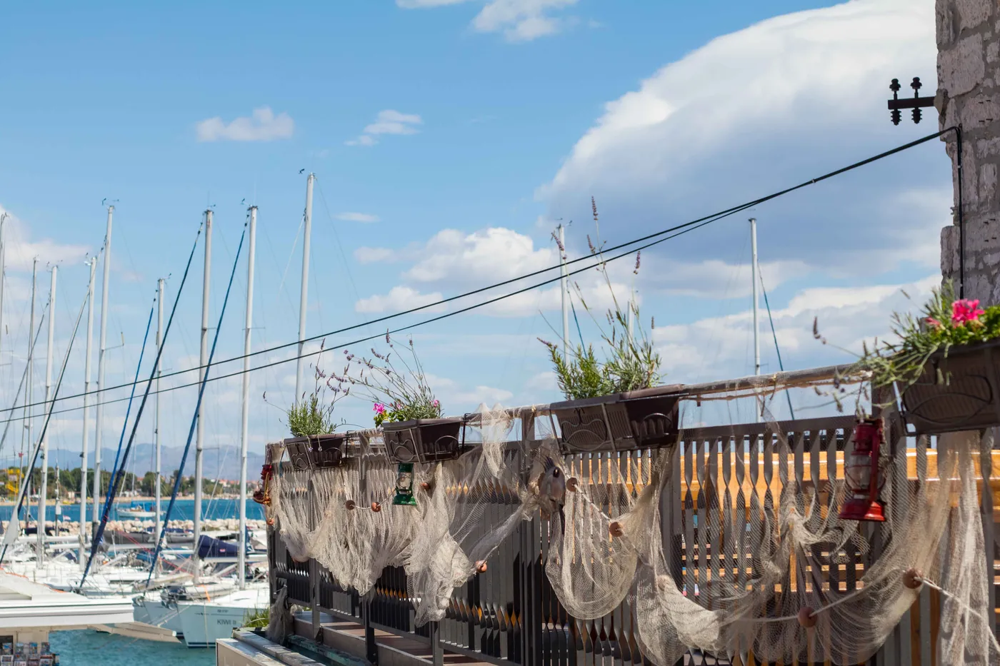
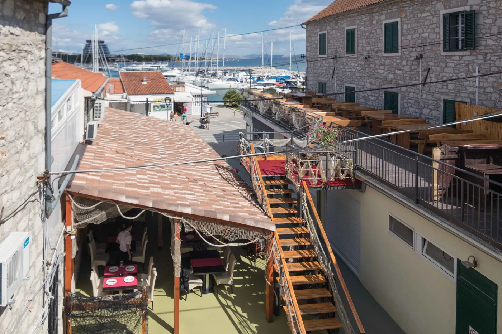
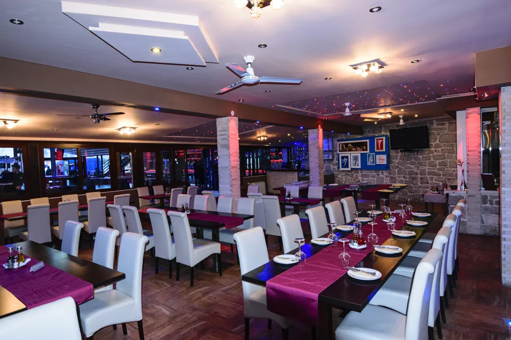
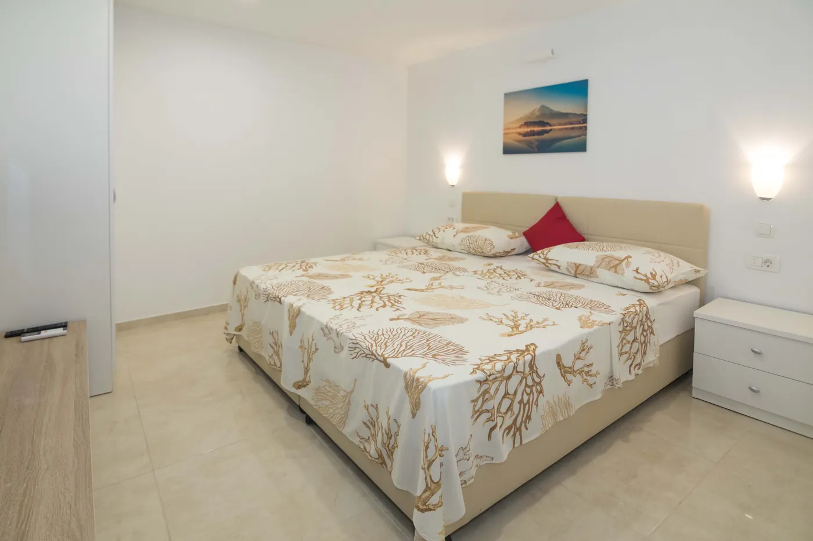
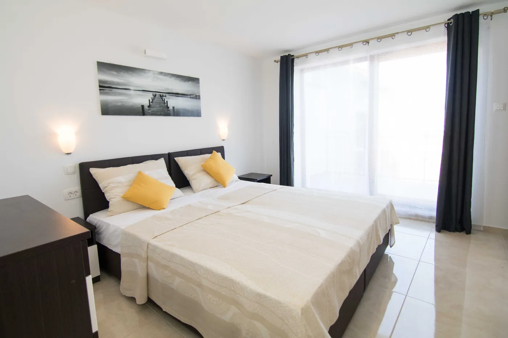
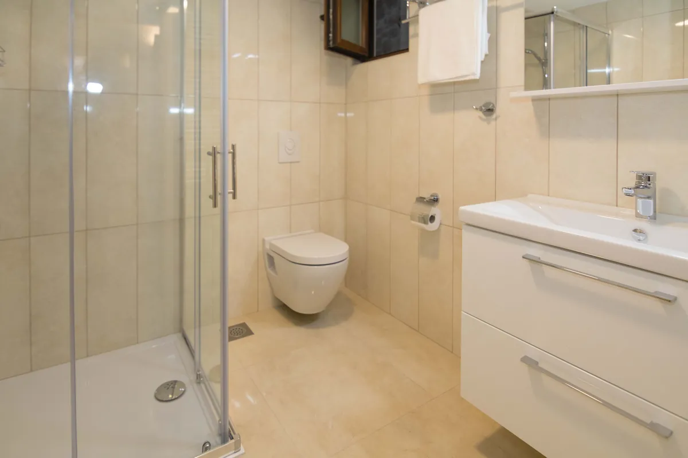
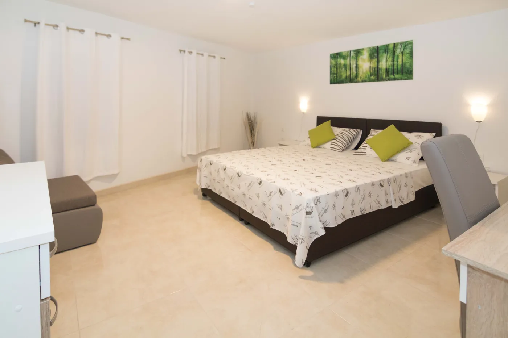
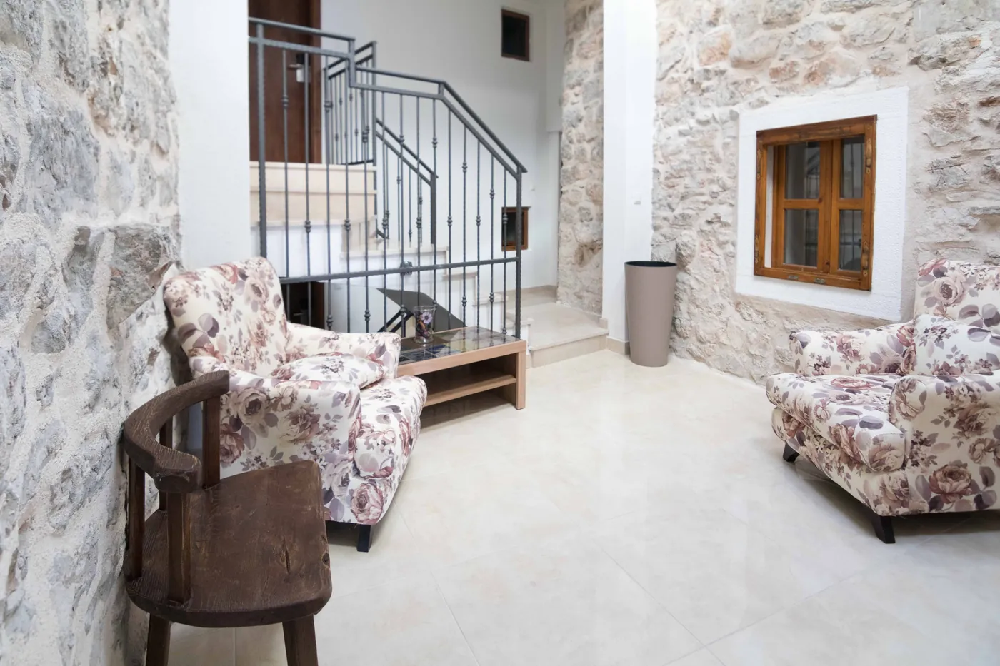
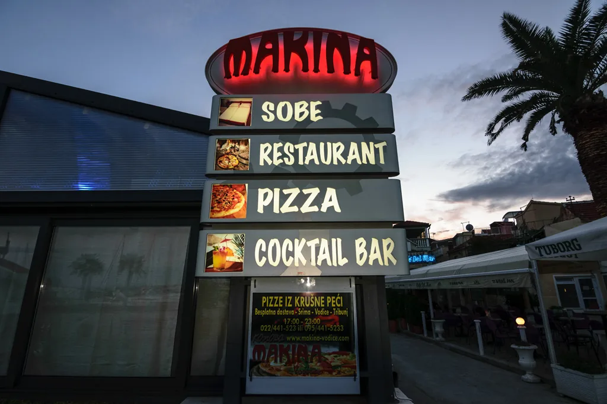
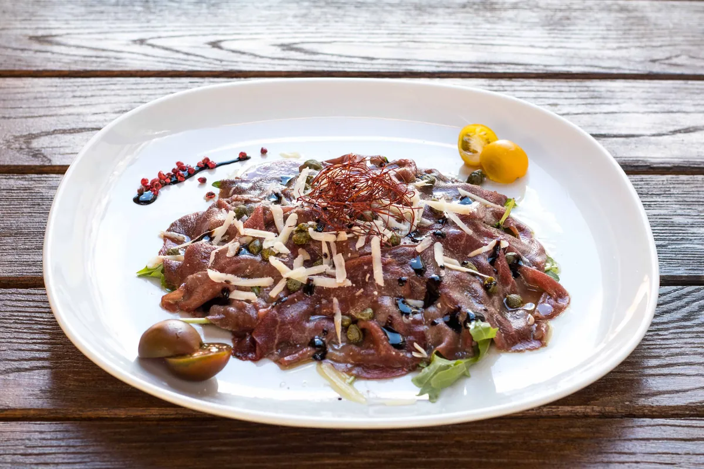
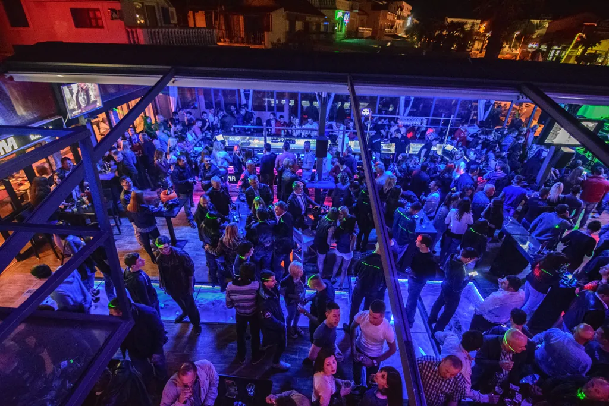
Pansion radi tijekom cijele godine, od 1. siječnja do 31. prosinca. Recepcija je dostupna 0 do 24. Prijava je od 14:00 do 23:00, a odjava od 08:00 do 11:00.
Sobu rezervirate telefonom na +385 95 440 0155 ili e-mailom na vodice.makina@gmail.com. Ljeti je rezervacija preporučljiva jer je pansion u središtu Vodica i kapacitet je ograničen.
Doručak se u pansionu poslužuje kao buffet i à la carte, a nudi se i kontinentalni doručak. Na raspolaganju su svježa peciva, voće i sok, uz vegetarijanske i bezglutenske opcije. Moguć je i doručak u sobi. Je li doručak uključen u cijenu, ovisi o odabranoj ponudi pri rezervaciji.
Gostima je na raspolaganju besplatan parking udaljen oko 30 m od objekta. Parking nije u sklopu same zgrade jer se pansion nalazi na obalnoj šetnici.
U prizemlju objekta nalaze se restoran, cocktail bar i night bar, a caffe bar radi od 08:00 do 02:00. Ljeti se u sklopu objekta održavaju i noćni programi s glazbom. Ako putujete s malom djecom ili tražite potpuni mir, to je dobro uzeti u obzir pri rezervaciji i pitati za sobu dalje od bara.
Da, ljubimci su dobrodošli. Uvjete i moguću doplatu potvrdite pri rezervaciji na +385 95 440 0155.
Da, transfer je dostupan uz doplatu. Najbliža je Zračna luka Zadar, udaljena 63 km. U sklopu objekta moguć je i najam automobila te bicikala.
Pansion je na samoj obali, a šetnica uz more prolazi ispred ulaza. Najbliža plaža udaljena je oko 300 m, a plaža Male Vrulje osam minuta hoda. ACI marina Vodice je uz sam objekt.
Da. U prizemlju objekta su konoba i restoran s mediteranskom kuhinjom, ribom, mesom i pizzom iz krušne peći. Restoran radi od 12:00 do 24:00, a caffe bar od 08:00 do 02:00.
Osoblje govori hrvatski, engleski, njemački, talijanski i španjolski.
Pansion je na adresi Obala I. Juričev Cota 20, na obalnoj šetnici u središtu Vodica. ACI marina je uz sam objekt, centar mjesta oko 150 m, trgovina 20 m, a autobusni kolodvor i ambulanta oko 150 m. Najbliža plaža je oko 300 m, plaža Male Vrulje osam minuta hoda. Besplatan parking nalazi se oko 30 m od objekta, a Zračna luka Zadar 63 km.